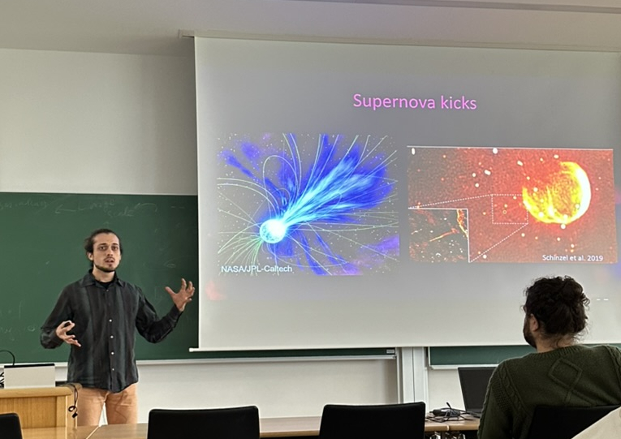

Talks & conferences
Invited talks
-
Sep. 2025
Astrophysics Seminar, MPI for Gravitational Physics, Potsdam
-
Aug. 2025
STRAND seminar, UC San Diego (online)
-
Feb. 2025
Stellar coffee & planetary tea, ESO, Garching

Selection of contributed talks
-
Jul. 2026
LIAC42: To Be or not to Be, Liège
-
Nov. 2025
Stellar Populations and their Explosions conference, Ringberg castle
-
Oct. 2025
2nd BLOeM collaboration meeting, Amsterdam
-
Oct. 2025
Astro-Obs seminar, Newcastle University (online)
-
Sep. 2025
Spins-UK conference, Royal Holloway University of London, Egham
-
May. 2025
18th Bonn neutron star workshop, MPI for Radio Astronomy, Bonn
-
Jan. 2025
MPA institute seminar, MPA, Garching
-
Nov. 2024
18th IMPRS symposium, ESO, Garching
-
Jul. 2024
EAS conference, Padova
-
May. 2024
Astronomy Tea Talk, Caltech, Pasadena
-
Apr.-May 2024
Towards a Physical Understanding of Tidal Disruption Events, KITP program, Santa Barbara
-
Mar. 2024
Workshop on stable mass transfer in binaries, CCA, New York City
-
Dec. 2023
ESO Informal Discussion, ESO, Garching
-
Jun.-Aug. 2023
MPA-Kavli summer program, MPA, Garching
-
Jun. 2023
15th IMPRS symposium, MPA, Garching
-
Feb. 2023
Nordic Winter School on Gravitational Astrophysics, Skeikampen, Norway
Outreach
I am passionate about outreach, as it allows me to share my enthusiasm for astronomy and science. Since 2024, I have had the pleasure of helping welcome the classes of Italian high-school students that regularly come visit MPA, where I engage them with talks about my work as an astrophysicist. It's incredibly rewarding to inspire the next generation of scientists. Additionally, I enjoy contributing to the physics and astronomy Stack Exchange communities, where I have answered more than a hundred questions and helped to foster a collaborative learning environment.
I also create astrophysical artwork (see the gallery on the home page) to bring the beauty of the cosmos to anyone who wants it.